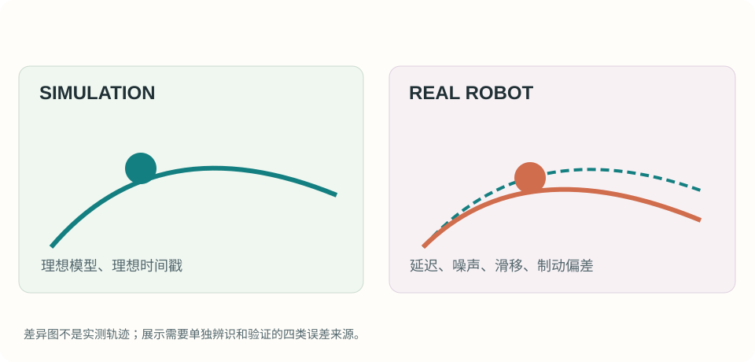
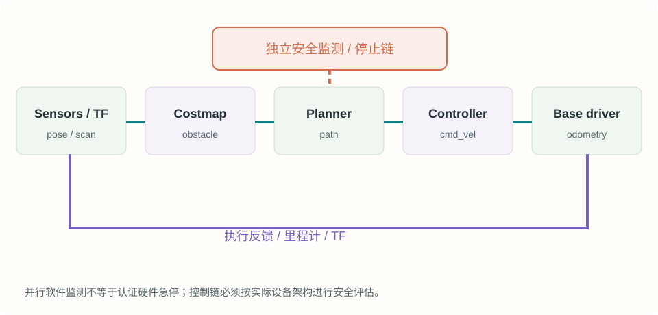
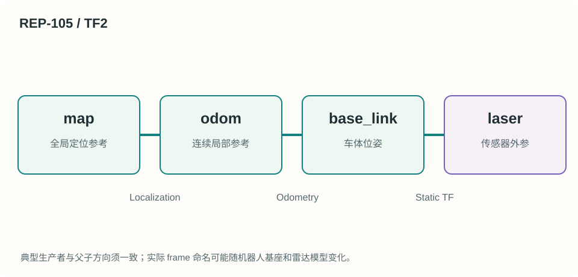
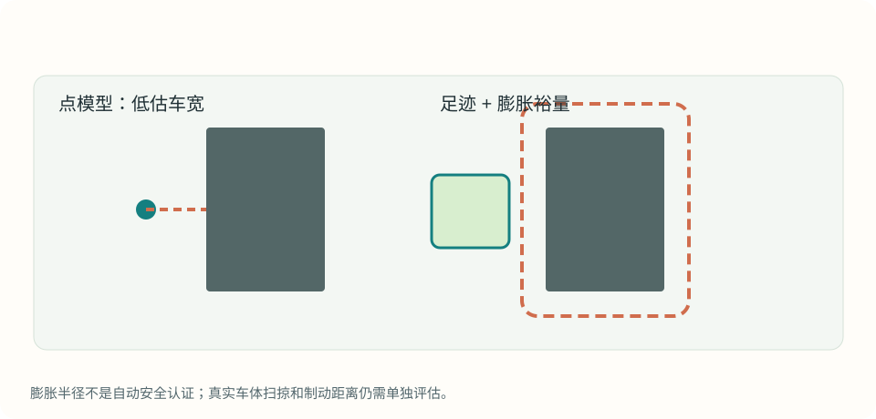
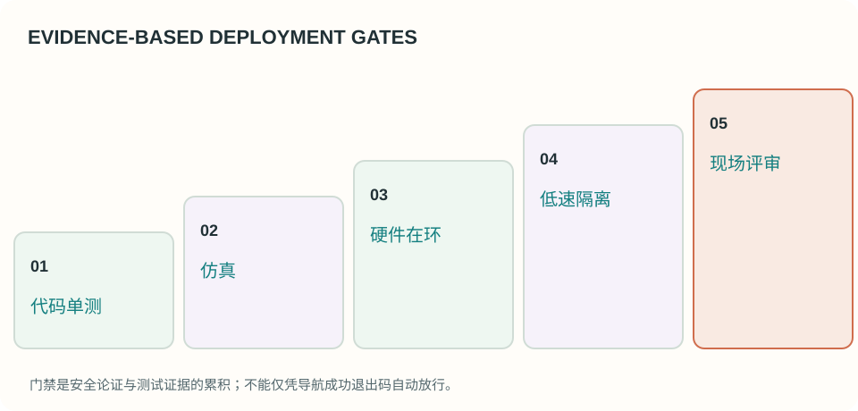

从仿真到实车：机器人动起来之前，哪些事情必须先对？
真正的 Nav2 部署要同时验证坐标系、时钟、足迹、控制器、安全层与低速实验。按照明确的门禁，从离线程序、仿真逐步进入现场，而不是直接执行一条看起来安全的路径。
仿真中永远沿轨迹中心行驶，不等于真实车体能做到
仿真器可能为机器人提供近乎完美的定位、稳定的控制周期和理想化的传感器信息；真实机器人则存在轮胎打滑、机械装配误差、时间同步抖动、感知遮挡、制动延迟和网络丢包。这些误差会让规划器依据的“当前状态”和机器人真正的位置发生偏差。
Sim-to-real 不只是把机器人模型换成硬件驱动，而是验证同一套数据与控制契约在实物系统中仍成立：坐标系、时间戳、足迹、安全距离、速度上限、规划更新、故障恢复及紧急停止。
SIMULATION TO ROBOT / 25

导航系统是多个组件组成的闭环，不是单个规划算法
ROS 2 Nav2 使用多个相互协作的服务器与插件来运行导航任务。定位/SLAM提供地图坐标与机器人状态估计，costmap将障碍与机器人几何转化为局部/全局可通行数据，规划器构建全局路线，控制器按照当前观测追踪路线，行为树和恢复行为组织任务与失败处理。
真实电机底盘仍需要自身的速度/转向执行、限幅和看门狗机制。规划器发布一条 nav_msgs/Path 并不意味着机器人有了可直接执行的速度指令；控制器和硬件驱动负责把连续控制命令变成真实运动。
SIMULATION TO ROBOT / 25

先确认 TF 树的方向：map → odom → base_link → sensor
按照 REP-105，map 用于全局参考，可根据定位修正发生跳变；odom 局部连续但长时间会漂移；base_link 绑定机器人本体。典型树由 map→odom（定位/SLAM）、odom→base_link（轮式里程计/融合估计）和 base_link→laser（静态标定）组成。
SIMULATION TO ROBOT / 25

不要把地图中某个激光点的坐标直接当成底盘坐标，也不要混用 odom 与 map 来定义同一条路径。若 TF 查找无法在传感器时间戳下得到需要的变换，正确的行为是拒绝过期数据并记录原因，而不是忽略时间维度。
消息时间戳必须代表真实测量时刻
一个激光帧如果来自 300 ms 前，而机器人正在以 1 m/s 移动，那么仅因感知延迟产生的平移量级可能达到 0.3 m，远大于一些局部安全裕量。延迟误差的简单量级估计是：
这一关系只是恒速近似；如果有加速、旋转、滑移和角速度，还需考虑完整姿态变化和状态不确定度。ROS 2 的仿真时钟 use_sim_time 与墙钟不能随意混用。不同传感器和计算节点的时间戳必须采用统一的时间来源，并在日志中保留消息接收时间与采集时间的区别。
足迹与膨胀半径不能由好看的地图截图判断
导航碰撞检查需要机器人实际足迹（多边形或圆形近似），而不是把激光点云简单当作不可穿越的单元格。过小的足迹会让车体边缘剐蹭货架；过大的膨胀半径又可能使实际可通行走廊在地图上被全部封死。
将 nav_msgs/OccupancyGrid 的 -1、0..100 和 Nav2 costmap 内部代价 0、253、254、255 混成一套统一的概率值是不正确的。地图分辨率、膨胀图层、障碍观测源与未知区域策略要与规划器的 traversability / collision 语义一致。
SIMULATION TO ROBOT / 25

规划输出永远不等于独立安全认证
规划器、局部控制器和感知可能同时依赖某个错误的地图数据，因此安全关键车辆不能仅通过“规划器报告成功”来决定是否允许加速。Nav2 的 Collision Monitor 提供基于传感器数据的附加临近碰撞减速/停止逻辑，在软件导航系统中具有独立于规划器的作用。
但软件 Collision Monitor 不等同于符合特定标准的功能安全系统。真正涉及人的设备还需要根据适用安全标准进行风险评估、硬件级急停/制动、独立安全传感器与认证控制器设计，验证失效模式和恢复过程。切勿把本章脚本或仿真碰撞监测当作现实生产设备的安全证书。
上线应当像爬楼梯：逐级准入，而不是一次全速试跑
- 代码与离线仿真：校验算法、地图、坐标、参数、机器人模型与碰撞几何，保存可复现实验。
- 传感器与硬件在环：检查驱动、轮速、制动响应、时间同步和 TF；确保没有重复变换发布者。
- 低速隔离现场：先无人员区域、低速度上限、受限目标范围；逐级扩大场景，记录位姿和控制误差。
- 故障注入：模拟消息延迟、地图更新失败、定位丢失、传感器超时、控制器超时，验证故障时确实停机。
- 逐步验收：设置清晰成功、失败和回退条件，由系统所有者按适用法规和安全流程批准扩大运行。
SIMULATION TO ROBOT / 25

交互：切换准入阶段，比较要核查的不同条件
同一算法从仿真走向实车，检查项目会逐步增加。按钮只是帮助阅读测试阶段差异；真实放行仍需完整记录、现场验证和人工批准。
仿真：检查地图、足迹、TF、路径碰撞、控制收敛和确定性重放。
任一阶段出现未解释的异常，应暂停扩大测试范围并保存日志。
离线 preflight：把错误配置变成能自动拒绝的测试
Python 3.10+，标准库。教学脚本检查一份构造的机器人配置清单：TF 父子关系、过期变换、地图分辨率、足迹半径、速度上限与雷达时间戳。随后故意注入三种错误（过期激光、超速命令、缺少 map→odom），断言它们全部被拒绝。
def preflight(config):
"""Offline manifest check, NOT connected to ROS or safety hardware."""
issues = []
parents = {}
now = config["now"]
for parent, child, stamp in config["transforms"]:
if child in parents:
issues.append("duplicate parent for "+child)
parents[child] = (parent, stamp)
if now - stamp > config["max_transform_age"]:
issues.append("stale transform "+parent+" -> "+child)
if stamp > now + .01:
issues.append("future transform "+child)
def chain(child):
visited, nodes = set(), [child]
while child in parents:
if child in visited:
issues.append("TF cycle at "+child)
break
visited.add(child)
child = parents[child][0]
nodes.append(child)
return nodes
if chain("laser") != ["laser","base_link","odom","map"]:
issues.append("required map/odom/base_link/laser chain missing")
if not (0 < config["resolution"] <= .5):
issues.append("map resolution out of configured range")
if config["footprint_radius"] <= 0:
issues.append("invalid footprint")
linear, angular = config["command"]
linear_cap, angular_cap = config["limits"]
if abs(linear) > linear_cap or abs(angular) > angular_cap:
issues.append("speed command exceeds limit")
if now - config["laser_stamp"] > config["max_sensor_age"]:
issues.append("stale laser scan")
return issues
config = {
"now": 10.,
"transforms": [("map","odom",9.96),
("odom","base_link",9.97),
("base_link","laser",9.95)],
"max_transform_age": .12,
"laser_stamp": 9.98,
"max_sensor_age": .12,
"resolution": .05,
"footprint_radius": .29,
"command": (.4,.2),
"limits": (.6,.8),
}
assert preflight(config) == []
assert "stale laser scan" in preflight(
dict(config, laser_stamp=9.5))
assert "speed command exceeds limit" in preflight(
dict(config, command=(.7,.2)))
assert any("chain missing" in issue for issue in preflight(
dict(config,transforms=config["transforms"][1:])))
print("offline preflight:",preflight(config),
"; stale sensor, overspeed, missing TF rejected")这不是实际 ROS 2 订阅器，没有实时读取 /tf、/scan 或 /cmd_vel，更不涉及电机急停。现实上线检查应从真实消息采集配置与统计，且用硬件看门狗和功能安全系统独立执行禁止运行的决策。
从终端和日志验证实车接口，不要只看导航成功弹窗
可在有 ROS 2/Nav2 环境的机器上根据实际命名空间逐项运行 ros2 topic list、ros2 topic hz /scan、ros2 topic echo /odom、ros2 run tf2_ros tf2_echo map base_link、ros2 lifecycle nodes 及 ros2 param list /controller_server。实际主题名可能包含机器人命名空间和重映射，命令需要按本机配置调整。
若系统出现导航卡住、局部地图不更新或机器人朝向与路径不一致，优先比对 TF 链、里程计速度、传感器时间戳、footprint 与 costmap 实际障碍，随后才调控制器权重。先排除失效输入，再调算法性能，能避免把无法定位的问题“修”成另一种危险行为。